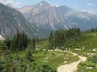
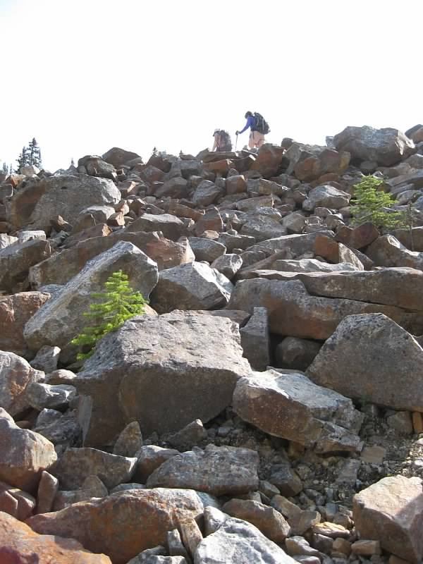
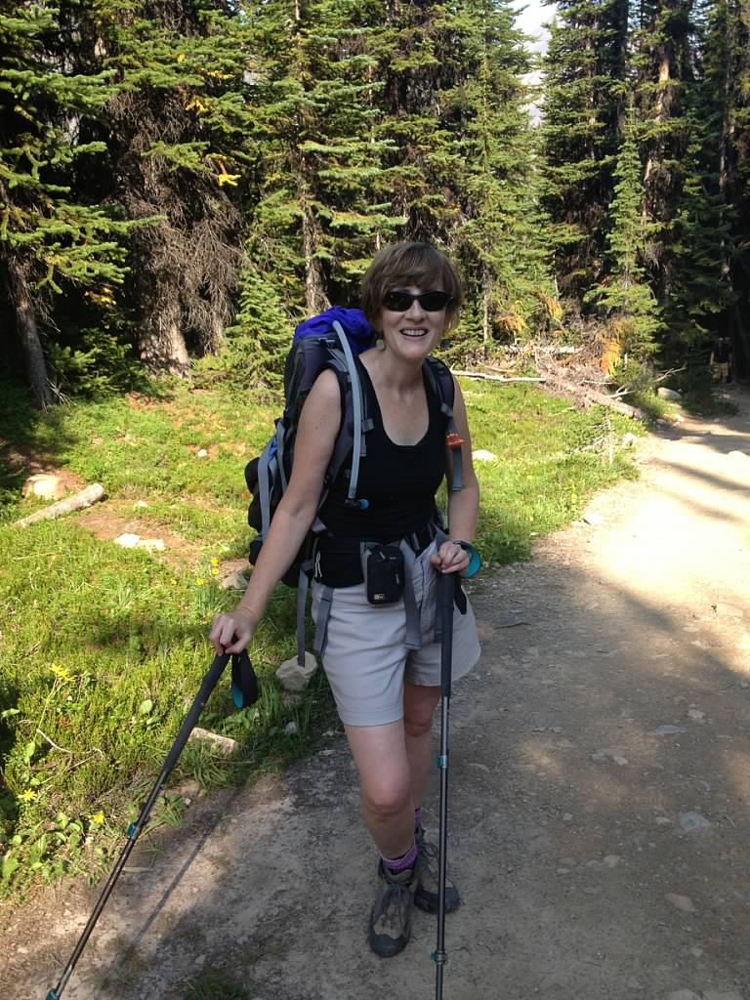

No matter where I go in the world, I want to hike its trails. Each place I dream of going includes a dream ofwhere I can put one foot in front of another and explore the landscape, smell the air, touch the leaves of yetanother piece of magic on this earth.
SearchMy favorite hikes are along mountain ridges overlooking the water. Ideally a mountain ridge in Europe that overlooks the Mediaterranean.
For the past five years, I've been privileged to visit the Canadian Rockies, and even though it sees a lot of tourists in summer, I love to hike up to the Agnes Lake Tea House from Lake Louise and follow the High Line trail up the valley.
Another favorite spot in the Canadian Rockies is Mount Edith Cavell, named after a WW1 nurse who smuggled Allied Soldiers from her hospital behind enemy lines to safetey in Belgium. The Germans discovered her work and tried her with treason, though she was not a German. She was executed by firing squad.
And there is always great company on the trail.
